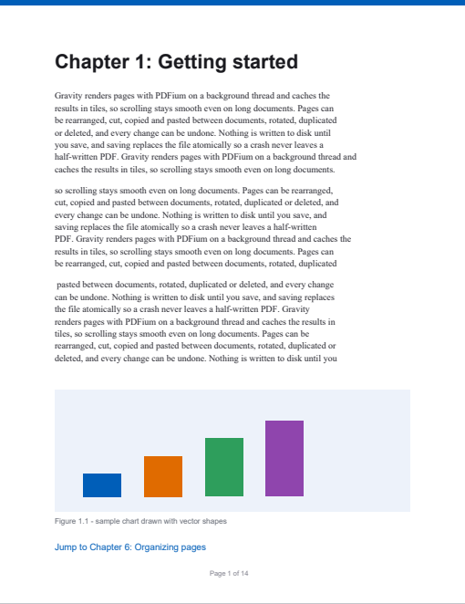

1 page selected

This page is represented by a thumbnail in this visual draft.
Use the outline to move between chapters, or choose Organize to rearrange pages.
No pages left
Undo to restore the sample pages.

This page is represented by a thumbnail in this visual draft.
Use the outline to move between chapters, or choose Organize to rearrange pages.
Undo to restore the sample pages.